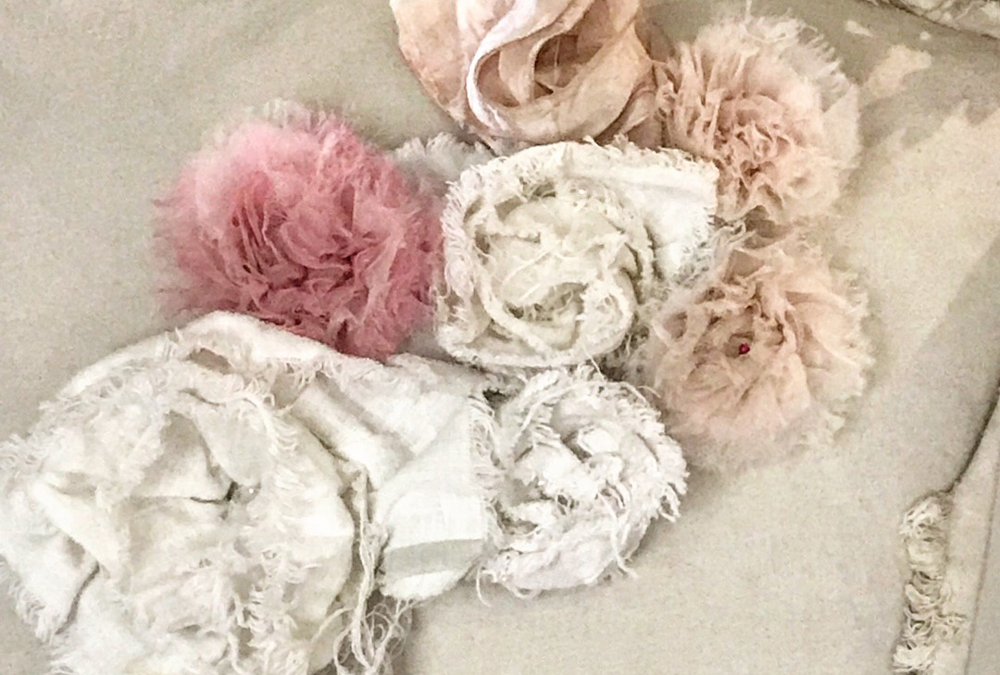
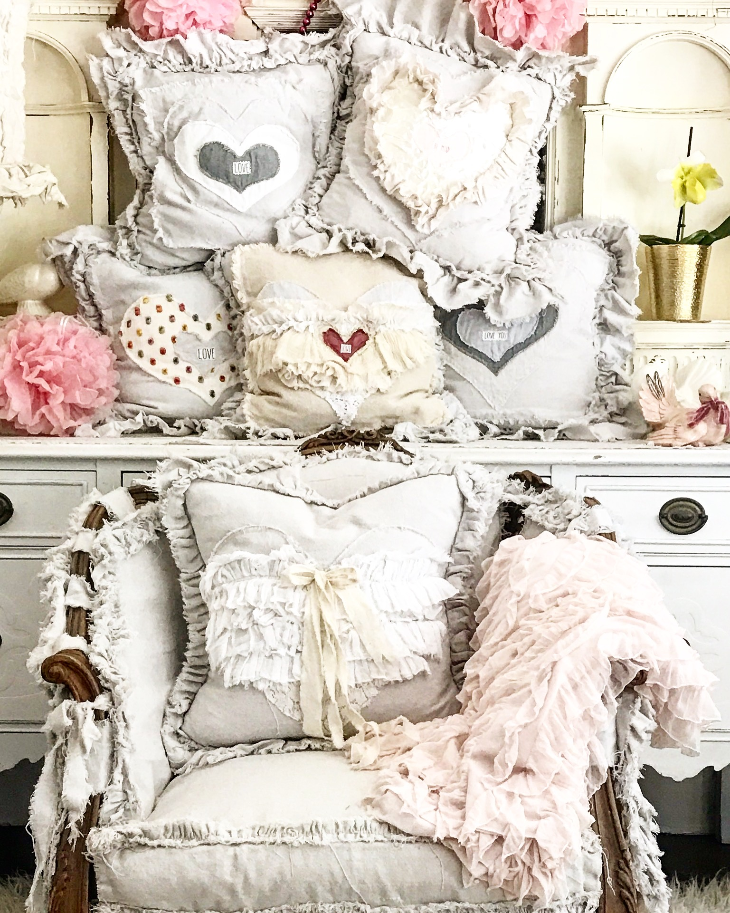

New stock every Friday at 10am
Hi! My name is Jill, we live in Sunny southern California in a rural area with chickens, horses, cats, birds, and a house pig named Tessa : ) Just to give you a brief background I'll start with the story behind the name Doves and Dahlias. My grandfather Haywood had a love for his prized dahlias, some of which he propagated and named. He also raised Doves. He would enter his dahlias in the Orange county fair every year and I have many of his trophies that line my kitchen shelves. He had great stories and a fascinating life and I really admired him and his simple way of living and love for nature. I enjoy my doves and the sweet song they sing and while I have little luck with dahlias my yard blooms with sweet jasmine and a variety of beautiful flowers, along with seasonal vegetable gardens and fruit trees, and bonus my mother is a bee keeper and her natural raw honey is the best!
Well, it seems I have been repeating myself so often I'll give you a description of my work . My primary medium of choice has always been clay, (we have a small art studio in our backyard too)my new medium of choice has become fabric : ). It started several years ago when I found a piece of tattered furniture at an estate sale .I brought it home and decided to try to make a slip cover. I had never sewn before and can't follow a pattern to save my life : ) so I make up my own, pinning and sewing on my 1950's machine, also an estate sale find. Thats where it all started and here I am now. In the past if I found something with a fun shape I would buy it and cover it! Ive been so busy with pillows lately that I am having less time to cover furniture but on occasion when I do I will post them for sale here. our story keeps evolving and I'm having fun along the way meeting wonderful people that enrich our lives!”